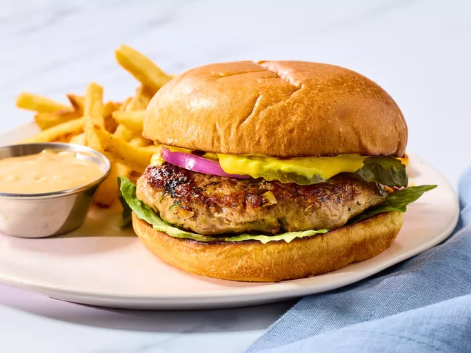

This thick crust pizza dough recipe yields a crust that is soft and doughy on the inside and slightly crusty on the outside. Cover it with your favorite sauce and toppings to make a delicious pizza.
:max_bytes(150000):strip_icc():format(webp)/7245-jays-signature-pizza-crust-DDMFS-4x3-2072304aa461449d8f00637c3cec83f1.jpg)
Stir together warm water, yeast, and brown sugar in a large mixing bowl; let sit for 10 minutes.
Stir oil and salt into yeast mixture. Mix in 2 1/2 cups flour until incorporated. Turn dough out onto a clean, floured surface. Knead dough, adding remaining flour, a little at a time, until dough is no longer sticky. Place dough into an oiled bowl.
Cover with a towel and let rise until doubled in size, about 1 hour.
Punch down dough and form it into a tight ball. Allow dough to relax for 1 minute before rolling out.
Preheat the oven to 425 degrees F (220 degrees C).
If baking dough on a pizza stone, place toppings on dough and bake immediately. If baking dough on a pan, lightly oil the pan and let dough rise for 15 to 20 minutes before topping and baking it.
Bake in the preheated oven until cheese is melted and crust is golden brown, 15 to 20 minutes..
These chewy red velvet brownies are topped with a tangy cream cheese frosting. Feel free to play around with the amount of cocoa powder in the recipe; use anywhere from 1 to 3 tablespoons, depending on how chocolaty you want them to be.

This turkey burger recipe is the best. After making them the first time my husband said "no more" to beef burgers. These are full of flavor — any cooking method may be used, and they freeze very well. The recipe can also be used for meatballs or meatloaves.

Whether you've been searching for the best turkey burger, need to use up the ground turkey lurking in your freezer, or are simply tired of beef burgers, boy, do we have the recipe for you. Gone are the days of boring, dry, and lacking-in-flavor turkey burgers thanks to this 5-star creation.
Trust us, this turkey burger recipe has earned over 1,500 5-star reviews and it will certainly be your new go-to recipe.
The turkey burgers are cooked in a skillet on the stove in this recipe, but you can also cook turkey burgers on the grill, in the oven, and in the air fryer. Turkey burgers should be cooked until their internal temperature is at least 165 degrees F.
Start by loading up your turkey burgers with flavorful toppings like lettuce, tomato, red onion, pickles, bacon, or your favorite cheese. Add condiments such as Garlic aioli , spicy mustard, barbecue sauce, or classic ketchup and mayo to boost flavor even more. Or you can try something beyond the basic toppings and add jalapeños if you want a kick, guacamole if you want something Mexican-inspired, or an egg if you're going for a breakfast-for-dinner vibe. You can be as creative or plain as you like!
Serve with simple sides like sweet potato fries, coleslaw, or a fresh green salad for a satisfying meal.
"These are great! I used seasoned salt instead of regular salt, but other than that followed the recipe. They do freeze well as I made some and froze them for later meals and they came out fine," says missbettyjane.
"These burgers were scrumptious! I'd take them any day over regular hamburgers! served them topped with lettuce, red onion, ketchup, and mustard, and they were so flavorful and juicy," raves one community member.
"DELICIOUS! I wish I could give this recipe 10 stars!! I followed others' advice and added some Worcestershire sauce/hot sauce and the burgers were amazing! I only cook for 2 but I always make extras and freeze these because they're so good," according to Letis.
Editorial contributions by Bailey Fink
Gather all ingredients.
Mix ground turkey, seasoned bread crumbs, onion, egg whites, parsley, garlic, salt, and pepper together in a large bowl.
Form into 12 patties.
Cook the patties in a medium skillet over medium heat, turning once, to an internal temperature of 180 degrees F (85 degrees C).
Serve hot and enjoy!